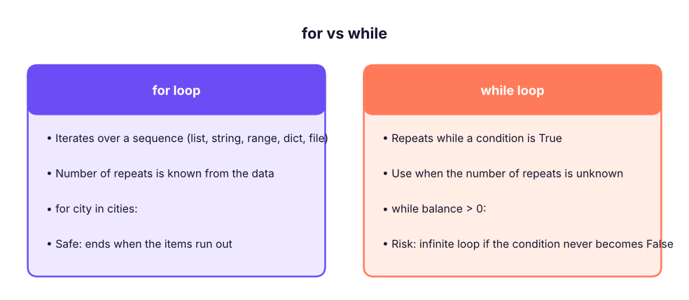

Loops: while, for, range, break, continue & Patterns
Repeat work without repeating code. Learn while and for loops, range(), enumerate(), zip(), break, continue, the loop else clause, nested loops, accumulation, search and counting patterns, and common loop bugs; with an eye on when to replace loops with vectorised pandas/NumPy.
- Write while and for loops and choose between them
- Use range(), enumerate() and zip() for index, value and parallel iteration
- Control loops with break, continue and the loop-else clause; avoid infinite loops
- Apply accumulator, counter, search, nested-loop and pattern-printing recipes
- Recognise when a loop should be replaced by a built-in, comprehension or vectorised operation
Why loops?
A loop repeats a block of code. Processing 10,000 rows, trying each file in a folder, retrying a failed request, or checking each number in a list are all loops.

The while loop
count = 1
while count <= 5:
print("Count:", count)
count += 1 # without this line the loop would never end!
print("Done")Count: 1 Count: 2 Count: 3 Count: 4 Count: 5 Done
Every while loop needs: (1) a starting value, (2) a condition, (3) a change inside the loop that eventually makes the condition False.
# Compound growth: how many years until 1,00,000 doubles at 8%?
amount, years = 100000, 0
while amount < 200000:
amount *= 1.08
years += 1
print(f"{years} years -> {amount:,.0f}") # the 'rule of 72': 72 / 8 = 9 years10 years -> 215,892
while True with break
Use an "infinite" loop that you leave deliberately when the input is right:
attempts = ["abc", "-4", "12"] # simulated user answers
i = 0
while True:
answer = attempts[i]; i += 1
if answer.isdigit() and int(answer) > 0:
print("Accepted:", answer); break
print("Invalid:", answer)Invalid: abc Invalid: -4 Accepted: 12
The for loop
for item in sequence: takes each item in turn.
for city in ["Pune", "Delhi", "Kochi"]:
print(city.upper())
for ch in "SQL":
print(ch, end=" ")
print()PUNE DELHI KOCHI S Q L
range()
range(stop), range(start, stop), range(start, stop, step) produce integers (stop excluded). It is lazy: range(1_000_000) does not store a million numbers.
print(list(range(5)), list(range(2, 8)), list(range(10, 0, -3)), list(range(0, 1)))
total = 0
for n in range(1, 101): total += n
print("Sum 1..100 =", total, "| check:", sum(range(1, 101)), "| formula:", 100 * 101 // 2)[0, 1, 2, 3, 4] [2, 3, 4, 5, 6, 7] [10, 7, 4, 1] [0] Sum 1..100 = 5050 | check: 5050 | formula: 5050
enumerate() and zip()
products = ["Pen", "Notebook", "Stapler"]
prices = [10, 45, 180]
for i, p in enumerate(products, start=1): # index and value together
print(i, p)
for p, price in zip(products, prices): # walk two lists in parallel
print(f"{p:<10}{price:>5}")
print(dict(zip(products, prices))) # build a dictionary from two lists1 Pen
2 Notebook
3 Stapler
Pen 10
Notebook 45
Stapler 180
{'Pen': 10, 'Notebook': 45, 'Stapler': 180}Avoid for i in range(len(x)) when you only need the items; use for item in x or enumerate.
break, continue, else
for n in range(1, 20):
if n % 3 != 0: continue # skip numbers not divisible by 3
if n > 12: break # leave the loop completely
print(n, end=" ")
print()
for n in range(2, 6):
if n == 9: break
else: # runs only if the loop finished WITHOUT break
print("loop completed with no break")3 6 9 12 loop completed with no break
| Keyword | Effect |
|---|---|
break |
Exit the nearest loop immediately |
continue |
Skip to the next iteration |
else on a loop |
Runs if the loop ended normally (no break): handy for "search and report not found" |
pass |
Do nothing (placeholder) |
Loop patterns
Accumulate (sum / product / build a list)
orders = [1200, 450, 3000, 780, 2200]
total, large = 0, []
for amount in orders:
total += amount
if amount >= 1000: large.append(amount)
print(total, large, total / len(orders))7630 [1200, 3000, 2200] 1526.0
Count and find the maximum
sales = [("North", 120), ("South", 95), ("East", 140), ("West", 88)]
best_region, best_value = None, float("-inf")
count_above_100 = 0
for region, value in sales:
if value > best_value: best_region, best_value = region, value
if value > 100: count_above_100 += 1
print(best_region, best_value, count_above_100)East 140 2
(max(sales, key=lambda x: x[1]) does the same in one line, Lesson 10.)
Search with early exit
def find_first(items, target):
for i, x in enumerate(items):
if x == target: return i # stop at the first match
return -1
print(find_first(["a", "b", "c"], "c"), find_first(["a", "b"], "z"))2 -1
Nested loops
for i in range(1, 4):
for j in range(1, 4):
print(i * j, end="\t")
print()1 2 3 2 4 6 3 6 9
# Pattern: right triangle of stars
for row in range(1, 6): print("*" * row)* ** *** **** *****
Nested loops multiply the work: 1,000 × 1,000 = 1,000,000 iterations. Be careful with big data.
Reading until a sentinel
readings = iter([12, 15, 11, -1, 99]) # -1 marks the end
total = 0
for r in readings:
if r == -1: break
total += r
print("Total before sentinel:", total)Total before sentinel: 38
Data examples
Looping over rows (and why it is slow)
import pandas as pd, time
s = pd.read_csv("superstore_sales.csv")
t0 = time.perf_counter()
loss_lines = 0
for profit in s["profit"]: # plain loop over a column (6,323 values)
if profit < 0: loss_lines += 1
t1 = time.perf_counter()
vec = (s["profit"] < 0).sum() # vectorised: one operation on the whole column
t2 = time.perf_counter()
print(f"loop: {loss_lines} loss-making lines in {1000 * (t1 - t0):.2f} ms | vectorised: {vec} in {1000 * (t2 - t1):.2f} ms")loop: 1682 loss-making lines in 0.84 ms | vectorised: 1682 in 0.34 ms
Same answer; the vectorised version is usually many times faster and shorter. Rule: in pandas/NumPy avoid Python loops over rows; use column operations, groupby, np.where. Use loops for files, APIs, orchestration, and small collections.
Summarising with a loop
totals = {}
for region, category, sales in zip(s["region"][:2000], s["category"][:2000], s["sales"][:2000]):
key = (region, category)
totals[key] = totals.get(key, 0) + sales
for k in sorted(totals)[:6]: print(k, f"{totals[k]:,.0f}")('East', 'Furniture') 2,148,878
('East', 'Office Supplies') 717,588
('East', 'Technology') 10,862,196
('North', 'Furniture') 2,782,383
('North', 'Office Supplies') 645,662
('North', 'Technology') 13,766,572This is a hand-made GROUP BY: you now see what groupby does behind the scenes.
Common loop bugs
| Bug | Symptom | Fix |
|---|---|---|
Missing update in while |
Runs forever (press ■ to interrupt) | Change the condition variable inside the loop |
Off-by-one with range |
Misses the last item | Remember stop is excluded: range(1, n + 1) |
| Modifying a list while iterating over it | Skipped items | Iterate over a copy for x in items[:] or build a new list |
for i in range(len(a)) then using a wrong index |
IndexError |
Use enumerate/zip |
| Re-using a loop variable after the loop | Holds the last value | Avoid relying on it |
| Resetting the accumulator inside the loop | Wrong totals | Initialise before the loop |
String += in a loop |
Slow for big text | "".join(parts) |
Print the loop variable and key values each iteration (print(i, value, total)), or use the debugger in VS Code/Jupyter (%debug). Test the loop on a tiny example by hand first.
Summary
whilerepeats while a condition holds (make sure something changes!);foriterates over any sequence.range(start, stop, step)generates integers, stop excluded;enumerategives index and value;zipiterates in parallel.breakexits,continueskips to the next item, loopelseruns when nobreakhappened.- Patterns: accumulator, counter, max/min tracking, search with early exit, nested loops, sentinel.
- For tables of data prefer vectorised pandas/NumPy over row loops; use comprehensions and built-ins for small collections.
1. What does list(range(2, 10, 3)) give?
2. What does continue do inside a loop?
break ends the loop; continue skips one iteration.3. When does a loop's else block run?
4. Why is this loop infinite? n = 5 then while n > 0: print(n)
5. What is a better way to count rows with negative profit in pandas?
6. Which function walks two lists at the same time?
zip(a, b) pairs items by position.(1) Print the multiplication table of 7 up to 7 × 10. (2) Given a list of order values, print the first one above 5,000 and its position, or "none". (3) Count vowels in a sentence. (4) Print the first 10 Fibonacci numbers. (5) FizzBuzz for 1..30.
Show solution
for i in range(1, 11): print(f"7 x {i} = {7 * i}")
vals = [900, 4200, 6100, 800]
for i, v in enumerate(vals):
if v > 5000: print(v, "at", i); break
else: print("none")
print(sum(ch in "aeiou" for ch in "data engineering is fun".lower()))
a, b = 0, 1
for _ in range(10): print(a, end=" "); a, b = b, a + b
print()
for n in range(1, 31): print("FizzBuzz" if n % 15 == 0 else "Fizz" if n % 3 == 0 else "Buzz" if n % 5 == 0 else n, end=" ")Q: FizzBuzz, reverse a string, print Fibonacci: why do interviewers ask these? They test loops, conditions, modulo, variable swapping and clear thinking, and whether you handle edge cases.
Q: for vs while?
for iterates over a known sequence; while loops until a condition changes, for unknown counts such as retries or reading until a sentinel.
Q: How would you speed up a slow loop over a DataFrame?
Vectorise (column operations, np.where, groupby), use built-ins or apply only when needed, or push the work into SQL.
Q: What does for i in range(len(lst)) signal?
Often a less Pythonic style; prefer iterating over items, enumerate or zip unless you need indexes to modify items.
Practise more online
Free, trusted places to test yourself on this topic. Links open the original site in a new tab.